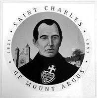

Stop 10 of 16 · Harold’s Cross
Mount Argus
Flood defences in a park, beside the church of a saint.
Mount Argus Park
Past the Stone Boat, most of the Poddle’s flow enters the grounds of Mount Argus. Here modern flood-control features sit in parkland, and this is the last easily reached stretch of the river before its long run underground begins.
Mount Argus
Mount Argus, in Harold’s Cross, was the first Passionist monastery in Ireland, founded in 1856. The present church was built between 1873 and 1878 and dedicated to St Paul of the Cross in 1878.
Mills at Mount Argus
In the monastery grounds the Poddle once fed a pond and a millrace. Harold’s Cross was then a small mill village: a paper mill worked at Mount Argus in the 19th century, and Loader’s Park Mills, a corn mill on Kimmage Road Lower, stood where the Waterwheel apartments are now. On Mount Argus Road a former flour mill later became a laundry, and is now apartments. The old Mount Argus mill, long disused, was taken over in the 20th century by the 45th Mount Argus Scout Troop as a boxing club.
Saint Charles
Charles Houben arrived at the newly founded monastery on 9 July 1857. Known for his gift of healing, he drew as many as 300 people a day to Mount Argus to be blessed.
He died there on 5 January 1893, aged 71. Hundreds of cures were credited to him in his lifetime and after. He was beatified by Pope John Paul II in 1988 and canonised by Pope Benedict XVI on 3 June 2007. In 1949 his remains were moved into the church, where they can still be visited.
